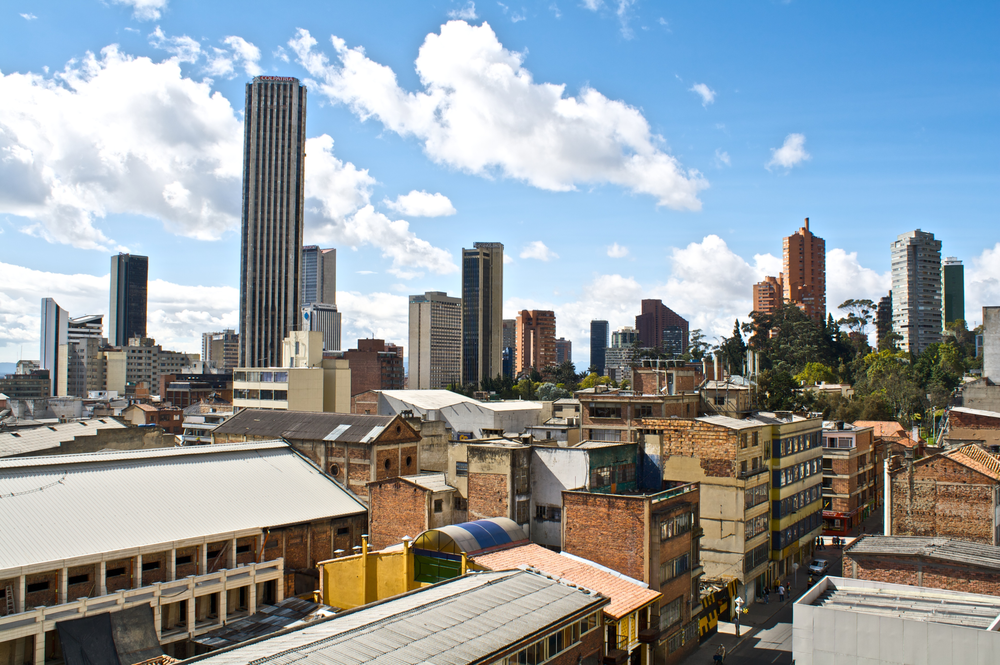
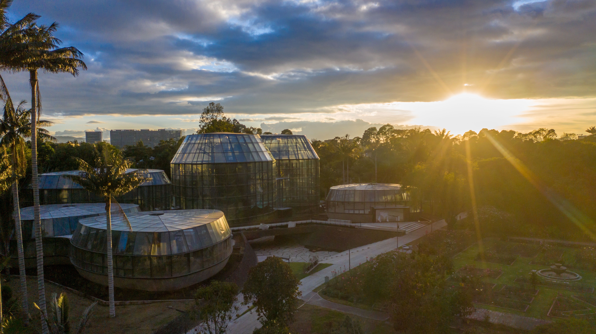
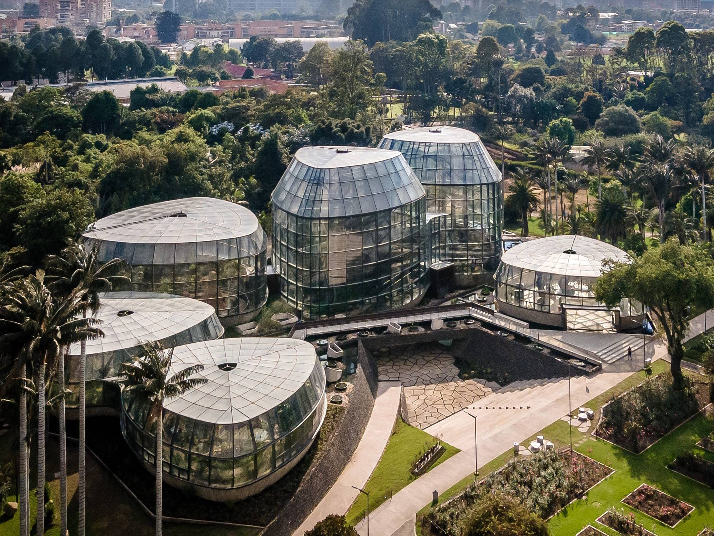

Bogotá · Referencias para elegir
Avance privado. Opciones numeradas por uso. Recomendación Jardín: opción 2 (CC0). Portada 1 es histórica de 2009. Textos complementarios en textos-propuestos.json. Sin reemplazar el paquete ni aprobar/publicar.
hero · Opción 1

Colpatria completa y contexto centro; comprobar techo/base al recortar.
Autor: Tijs Zwinkels · CC BY-SA 2.0 · Fuente original
apta_para_eleccion_de_referencia_pendiente_aprobacion
Pendiente de aprobación individual; sin generación.hero · Opción 2
Archivo pendiente: no evaluable visualmente.
Vista urbana al atardecer; medir tamaño/reconocimiento de Colpatria, no asumir aptitud por serQualityImage.
Autor: Steffen Schmitz (Carschten) · CC BY-SA 4.0 · Fuente original
pendiente_descarga_no_presentar_como_apta
Pendiente de aprobación individual; sin generación.bogota-jardin · Opción 1

Domos al atardecer: contraluz y brillo solar; domo lateral parcialmente cortado. Menor claridad que opción 2.
Autor: Jardín Botánico José Celestino Mutis · CC BY-SA 4.0 · Fuente original
apta_para_eleccion_de_referencia_pendiente_aprobacion
Pendiente de aprobación individual; sin generación.bogota-jardin · Opción 2

Vista elevada, varios domos completos, arquitectura reconocible y caminos.
Autor: Camiloskyyy · CC0 1.0 · Fuente original
apta_para_eleccion_de_referencia_pendiente_aprobacion
Pendiente de aprobación individual; sin generación.bogota-simon · Opción 1
Archivo pendiente: no evaluable visualmente.
Lago visto desde cascada; escena propia del parque y contexto, no árbol/banco genérico.
Autor: Felipe Restrepo Acosta · CC BY-SA 3.0 · Fuente original
pendiente_descarga_no_presentar_como_apta
Pendiente de aprobación individual; sin generación.